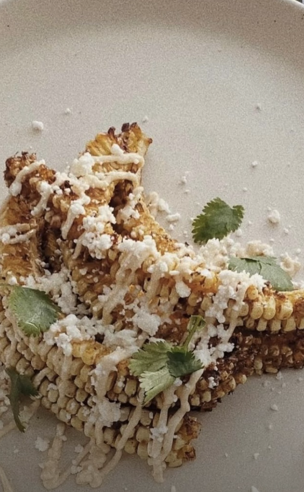

spring "corn ribs" recipe

I love food (as most people do) and during covid when everyone was stuck at home people were getting pretty creative with their food. Me, being naturally curious, I wanted to try every single thing which led to a ton of grocery credit card debt and also a lot of new favorite recipes. Today, Im sharing one of my favorites. I hope you love it as much as I do.
Ingredients:
4 corn on the cobs (sliced in quarters)
4 tbsp vegan butter/ regular butter or olive oil
1 tsp lemon pepper
1/2 tsp garlic powder
1/2 tsp chili powder
1/4 tsp black pepper
1/2 tsp paprika
pinch of salt
cilantro
feta cheese or cotija cheese
For the sauce:
1/2 cup of mayo
1 tsp chopped chipotle in adobo sauce
•1/2 a lime (for the juice)
Instructions:
- Cut cobs in half long ways and then in half again so theres 4 long thin pieces. repeat until finished.
- Mix together your oil/butter and spices and brush it on the cobs
- Cook for 10 minutes @ 400 degrees in the air fryer flipping halfway (do not stack the cobs just do multiple rounds so everything cooks evenly. I did 4 rounds since i had 4 cobs)
- Mix together mayo, lime juice and chopped chipotle in a bowl and set aside
- Once the cobs are done you can either drizzle the dressing over them or use it as a dip (I drizzled mine)
- Top with cilantro and cotija and serve immediately.